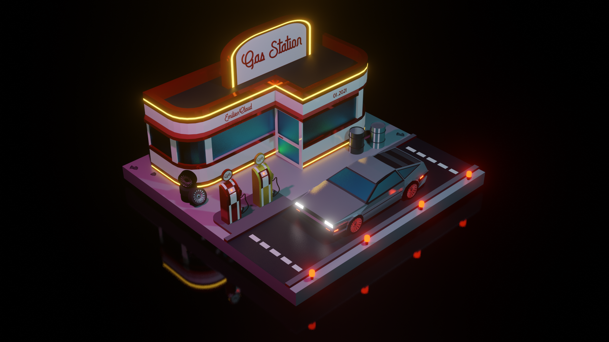
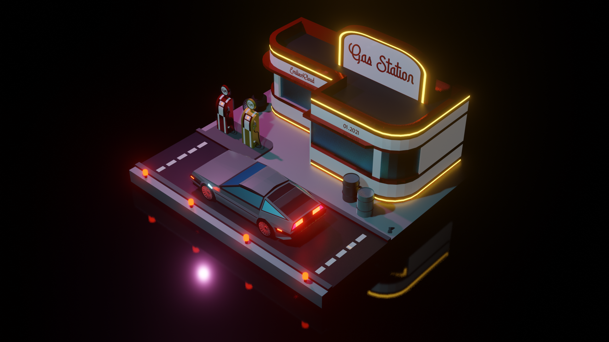

Ce projet 3D est un projet personnel. J'ai voulu modélisé cette scène que j'ai imaginé car je suis une personne qui de part son ignorance surement, aurait aimer vivre dans les années 80. L'utitisation de la mythique DeLorean était donc pour moi une évidence. Etant de plus fan de la saga "Retour vers le futur".
Après avoir modélisée la plupart de mes scène, je fais un rendu comme celui-ci dessus et un rendu "vu de l'arrière" afin de montrer au spectateur tout les détaille de mes scène.
